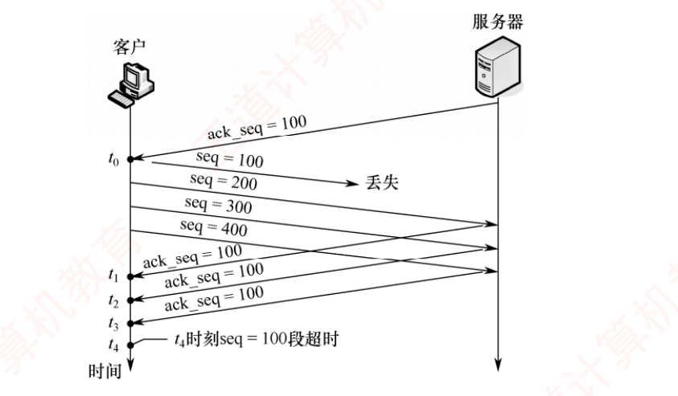
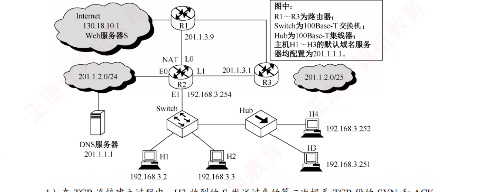

408
408先答旧题
第三次握手的 seq 和 ack？
甲发 seq=100、200 字节；乙全收到，回的 ack？
TIME-WAIT 等多久？谁才有？
TCP 建在不可靠的 IP 之上，却要做到不丢、不重、不乱，还不能把对方和网络压垮。这一话分三层：怎么保证可靠，怎么不压垮接收方（流量控制），怎么不压垮网络（拥塞控制）。后两者相似但对象不同，先把它们分开。
其之壹可靠传输
TCP 用的仍是滑动窗口的思路，但它比链路层多了几个麻烦：往返时间变化大，还可能乱序。
累积确认：ack=n 说明 n 之前全收到了。乱序到达的段，接收方可以先缓存，但只确认连续部分。
超时重传：发出一段就计时，超时没确认就重发。超时时间 RTO 怎么定？太短白重传，太长等太久。所以动态估计：
RTT 估计
RTTs = (1−α)·RTTs + α·新 RTT（α=1/8）RTTd = (1−β)·RTTd + β·|RTTs − 新 RTT|（β=1/4）RTO = RTTs + 4·RTTd。
重传过的段的 RTT 不用来估计，因为分不清确认是针对哪一次的（Karn 算法）。
代入：RTTs = 100 ms，RTTd = 20 ms，新样本 RTT = 140 ms。RTTs = 7/8×100 + 1/8×140 = 105。RTTd = 3/4×20 + 1/4×|105−140| = 15 + 8.75 = 23.75。RTO = 105 + 95 = 200 ms。
快速重传：超时要等很久。接收方每收到一个失序的段，就立刻重复确认。发送方连续收到 3 个重复 ACK（一共 4 个相同的 ACK），就知道那段丢了，立即重传，不等超时。
合上页面说一遍：累积确认、超时重传、快速重传分别解决什么？3 个重复 ACK 一共有几个 ACK？
确认连续的数据；丢了要重发；不用等超时。一共 4 个相同的 ACK。
其之貳流量控制
水龙头和水桶
接收方告诉发送方：我的水桶还能装多少。发送方发的不能超过它。比方的局限：窗口只有收到新确认才知道，桶的大小信息本身也会滞后。
接收方把剩余缓存通过首部的窗口字段（rwnd）告诉发送方。这是接收方能控制的。
零窗口：rwnd=0 时发送方停发。后来接收方腾出空间发窗口更新，如果这个报文丢了，双方就会一直等下去。所以发送方启动持续计时器，定时发一个 1 字节的探测段，问窗口有没有变大。
糊涂窗口综合症：接收方每次只腾出一点空间就通告，发送方每次只发一点，首部 40 字节带 1 字节数据，效率很低。解决：接收方等腾出足够空间才通告；发送方用 Nagle 算法，把小数据攒一攒，收到确认后再发。
其之參拥塞控制
流量控制只管接收方。但路由器也可能被压垮：大家都全力发，路由器队列满了就丢包，大家再重传，网络更堵。
没有人告诉发送方网络状况，所以发送方自己猜。它用 cwnd（拥塞窗口）表示对网络的估计，靠两个信号调整：丢包就是拥塞。
发送窗口
发送窗口 = min(rwnd, cwnd)可发字节数 = 发送窗口 − 在途未确认的
例：rwnd=6000，cwnd=4000，已发 3000 未确认。发送窗口 4000，还能发 1000。
它有四个算法，用一个阈值 ssthresh（慢开始门限）分界：
慢开始：开始不知道网络容量，从 1 开始试探。每收到一个确认 cwnd+1，于是每个 RTT 翻一倍。名字叫「慢」是因为起点低，增长其实是指数的。
拥塞避免：到达 ssthresh 后变谨慎，每个 RTT 只 +1。
超时：说明网络堵得厉害，什么都收不到了。
3 个重复 ACK：后面的段还能到，说明只是个别丢包，网络没那么糟。不用回到起点。
拥塞四步（核心）
慢开始：cwnd < ssthresh 时，每个 RTT 翻倍。但不超过 ssthresh。
拥塞避免：cwnd ≥ ssthresh 时，每个 RTT +1。
超时：ssthresh = cwnd/2，cwnd = 1，重新慢开始。
3 个重复 ACK（快重传 + 快恢复）：ssthresh = cwnd/2，cwnd = ssthresh，然后线性增长。
| 轮次 | cwnd | ssthresh | 阶段 |
|---|---|---|---|
| 1 | 1 | 16 | 慢开始 |
| 2 | 2 | 16 | 慢开始 |
| 3 | 4 | 16 | 慢开始 |
| 4 | 8 | 16 | 慢开始 |
| 5 | 16 | 16 | 拥塞避免 |
| 6 | 17 | 16 | 拥塞避免 |
| 7 | 18 | 16 | 拥塞避免 |
| 8 | 19 | 9 | 超时 |
| 9 | 1 | 9 | 慢开始 |
| 10 | 2 | 9 | 慢开始 |
| 11 | 4 | 9 | 慢开始 |
| 12 | 8 | 9 | 慢开始 |
| 13 | 9 | 9 | 拥塞避免 |
| 14 | 10 | 9 | 拥塞避免 |
| 15 | 11 | 9 | 拥塞避免 |
| 16 | 12 | 6 | 快恢复 |
| 17 | 6 | 6 | 拥塞避免 |
| 18 | 7 | 6 | 拥塞避免 |
| 19 | 8 | 6 | 拥塞避免 |
走一遍数字。ssthresh = 16，cwnd 从 1 开始：
| 轮次 | cwnd | 说明 |
|---|---|---|
| 1–5 | 1 2 4 8 16 | 慢开始 |
| 6–8 | 17 18 19 | 拥塞避免 |
| 超时 | cwnd=1，ssthresh=9 | 19÷2 取 9 |
| 后续 | 1 2 4 8 9 10 | 到 8 再翻倍会超过 9，封顶 9，之后 +1 |
| 3 重复 ACK（cwnd=10） | ssthresh=5，cwnd=5 | 不回到 1 |
| 后续 | 5 6 7 | 直接线性 |
三个细节
① 翻倍封顶到 ssthresh：cwnd=8，ssthresh=12 时，下一轮是 12，不是 16。 ② 超时那一刻就变 1，不占一个 RTT。 ③ 3 个重复 ACK：不回到慢开始。
单位要统一
MSS=1 KB 时可以把 KB 当段算。给其他 MSS（比如 2 KB、1460 B）时，先换算成段再走这个流程。
算吞吐：一段时间内 cwnd 稳定为 W，则吞吐 = W ÷ RTT。比如 cwnd = 64 KB，RTT = 100 ms，吞吐 = 640 KB/s。
合上页面说一遍：不看书，走一遍：ssthresh=8，从 1 开始，到 cwnd=10 时超时，后面怎么走？再 3 个重复 ACK 呢？
1 2 4 8 9 10，超时后 ssthresh=5，cwnd=1：1 2 4 5 6 7…；如果 cwnd=7 时 3 个重复 ACK：ssthresh=3，cwnd=3，然后 4 5 6…。
领域展开
窗口：min(rwnd, cwnd) − 在途。
慢开始：翻倍封顶。拥塞避免：+1。
超时：ss=cwnd/2，cwnd=1。3 冗余：ss=cwnd/2，cwnd=ss。
零窗口：持续计时器，发 1 字节探测。
其之肆实战

再深一层
| 时刻 | 客户收到 | 算不算冗余 | 累计冗余数 |
|---|---|---|---|
| t₀ | ack_seq=100（第一次） | 不算，这是正常确认 | 0 |
| t₁ | ack_seq=100 | ✅ 冗余 | 1 |
| t₂ | ack_seq=100 | ✅ 冗余 | 2 |
| t₃ | ack_seq=100 | ✅ 冗余 | 3 ⟹ 立即快重传 ✅ |
| t₄ | — | seq=100 段的重传计时器超时（本题用不到） | |
⚠️ t₂ 是第二强的干扰项：把 t₀ 那个正常确认也数成冗余，就会在 t₂ 凑满「3 个」。记住教材那句「对 1 号报文段的正常确认不能称为冗余 ACK」。
📌 图里为什么会连着来三个相同的 ack_seq=100：seq=100 丢了，但 seq=200、300、400 三个段都到达了服务器，每个失序段都触发服务器立即回一个「我还等着 100」的确认。
再深一层
① 发送窗口 ＝ min[cwnd 4000, rwnd 2000] ＝ 2000B ② 已发 2 个段共 2000B，其中第 1 个已确认、第 2 个仍在途未确认 ⟹ 窗口已被占用 1000B ③ 还能发 ＝ 2000 − 1000 ＝ 1000B⚠️⚠️ 四个选项精确对应四种漏算，是一组极好的干扰项：
| 选项 | 怎么来的 | 漏了哪一步 |
|---|---|---|
| A 1000 | min 之后再扣在途 1000 | ✅ 两步都做了 |
| B 2000 | min(4000,2000) | 忘了扣在途未确认的 1000B |
| C 3000 | 4000 − 1000 | 忘了取 min，直接用 cwnd 扣 |
| D 4000 | cwnd 本身 | 两步都没做 |
还能发 ＝ min[rwnd, cwnd] − 已发送但未被确认的字节数第二项就是所谓的「在途数据 / 飞行中的数据」。2021（5.3.5-09）和 2025（5.3.5-10）两道真题用的是同一个公式，只是包装成了时序图。
📌 「仅第一个段被确认」这句话是题眼：它同时告诉了你两件事——已发 2000B、已确认 1000B ⟹ 在途 1000B。
再深一层
| 轮次 | cwnd | 本轮发送 | 累计 | 乙缓存余量 = rwnd | 发送窗口 = min |
|---|---|---|---|---|---|
| 第 1 RTT | 1KB | 1KB | 1KB | 15KB | 1KB |
| 第 2 RTT | 2KB | 2KB | 3KB | 13KB | 2KB |
| 第 3 RTT | 4KB | 4KB | 7KB | 9KB | 4KB |
| 第 4 RTT | 8KB | 8KB | 15KB | 1KB | 8KB |
| 4RTT 末 | 16KB | — | 15KB | 1KB | min[16, 1] ＝ 1KB ✅ |
⚠️⚠️ 四个选项就是「只算了其中一条线」：
| 选项 | 它是什么 |
|---|---|
| A 1KB | min[cwnd 16, rwnd 1] ✅ |
| B 8KB | 第 4 个 RTT 期间的 cwnd（少算一轮） |
| C 16KB | 4RTT 后的 cwnd，忘了取 min ← 最强干扰项 |
| D 32KB | 初始阈值 ssthresh，完全用不上 |
🔗 本题与 5.3.5-07、2016 综合真题（5.3zh-14）构成「缓存只进不出」三连，解法完全一样：逐轮列表，一列 cwnd 一列缓存余量，最后取 min。
再深一层
| 时刻 | cwnd | 阶段 |
|---|---|---|
| 超时瞬间 | 16KB → 1KB | ssthresh ＝ 16/2 ＝ 8KB |
| 第 1 RTT 后 | 2KB | 慢开始（×2） |
| 第 2 RTT 后 | 4KB | |
| 第 3 RTT 后 | 8KB ＝ ssthresh | |
| 第 4 RTT 后 | 9KB ✅ | 转入拥塞避免（+1MSS） |
| 本题（16KB） | 5.3.6-04（34KB） | |
|---|---|---|
| 新 ssthresh | 8KB | 17KB |
| 4RTT 内的序列 | 2, 4, 8（撞线）, 9 | 2, 4, 8, 16（没撞线） |
| 第 4 轮的增长方式 | 线性 +1 | 指数 ×2 |
⚠️ D（16KB）是「以为拥塞窗口能恢复到原值」的错觉；B（8KB）是少算最后一轮；A（7KB）纯属凑数。
📌 教材关于 cwnd = ssthresh 时的口径：「既可使用慢开始算法，又可使用拥塞避免算法」，但常规做法是用拥塞避免。本题正是按常规做法：第 3 轮末 cwnd 达到 8 = ssthresh，第 4 轮就转线性。
再深一层
t：cwnd＝8 超时 ⟹ ssthresh＝4，cwnd＝1 慢开始：1 → 2 → 4（＝ssthresh，转拥塞避免） 拥塞避免：5 → 6 → 7 → 8 → 9 → 10 → 11 → 12 （共 10 轮） rwnd 恒为 10KB ⟹ 发送窗口 ＝ min[12, 10] ＝ 10KB⭐⭐ 书答最后那句话是考场上的「秒杀技」：「乙每收到一个数据段都会发出接收窗口为 10KB 的确认段」⟹ rwnd 恒为 10KB ⟹ 发送窗口不可能超过 10KB ⟹ B、C、D 全部 > 10，直接排除。一秒得解，连一轮都不用算。
⚠️ 但这个技巧有前提：必须确认 cwnd 确实涨过了 10KB。若 10RTT 后 cwnd 只有 7KB，答案就是 7KB 而不是 10KB。本题 cwnd 涨到 12 > 10，rwnd 才真正成为瓶颈。
📌 与 5.3.6-05 是同一题型换数字（那题超时前 cwnd=16、这题 8），两题的答案都是 rwnd 本身，套路完全一致。
再深一层
| RTT 数 | 0 | 1 | 2 | 3 | 4 | 5 |
|---|---|---|---|---|---|---|
| cwnd | 1KB | 2KB | 4KB | 8KB | 16KB | 32KB ✅ |
① 「至少」 ＋ 未给 ssthresh ⟹ 假设全程指数增长（最快的走法） ② 接收缓存 64KB ≫ 32KB ⟹ rwnd 不构成瓶颈，只看 cwnd⚠️⚠️ C（160ms）与 D（165ms）是「误按拥塞避免线性增长」造出来的：若从 1KB 每轮 +1KB 涨到 32KB，要 31RTT = 155ms；再加上一些别的错算就落到 160/165。看到「至少 / 最少」就用指数，看到「最长 / 最多」就用线性——这是本节的总开关。
⚠️ B（30ms）是多数一轮：从 1KB 到 32KB 是 5 次翻倍（2⁵ = 32），不是 6 次。建议直接写出序列数格子。
⭐⭐ 与 2020 真题（5.3.6-13）构成「最短 vs 最长」的完美对照：本题问「至少」⟹ 全程指数；2020 问「最长」⟹ 把 ssthresh 压到起点以下、全程线性。两题务必连着做。
| 编号 | IP 分组的前 40B 内容 |
|---|---|
| 1 | 45 00 00 30 01 9b 40 00 80 06 1d e8 c0 a8 00 08 d3 44 47 50 0b d9 13 88 84 6b 41 c5 00 00 00 00 70 02 43 80 5d b0 00 00 |
| 2 | 45 00 00 30 00 00 40 00 31 06 6e 83 d3 44 47 50 c0 a8 00 08 13 88 0b d9 e0 59 9f ef 84 6b 41 c6 70 12 16 d0 37 e1 00 00 |
| 3 | 45 00 00 28 01 9c 40 00 80 06 1d ef c0 a8 00 08 d3 44 47 50 0b d9 13 88 84 6b 41 c6 e0 59 9f f0 50 10 43 80 2b 32 00 00 |
| 4 | 45 00 00 38 01 9d 40 00 80 06 1d de c0 a8 00 08 d3 44 47 50 0b d9 13 88 84 6b 41 c6 e0 59 9f f0 50 18 43 80 e6 55 00 00 |
| 5 | 45 00 00 28 68 11 40 00 31 06 06 7a d3 44 47 50 c0 a8 00 08 13 88 0b d9 e0 59 9f f0 84 6b 41 d6 50 10 16 d0 57 d2 00 00 |
1）表 1 中的 IP 分组中，哪几个是由 H 发送的？哪几个完成了 TCP 连接建立过程？哪几个在通过快速以太网传输时进行了填充？
2）根据表 1 中的 IP 分组，分析 S 已经收到的应用层数据字节数是多少。
3）若表 1 中的某个 IP 分组在 S 发出时的前 40B 如表 2 所示，则该 IP 分组到达 H 时经过了多少个路由器？
| 表 2 | 前 40B |
|---|---|
| 来自 S 的分组 | 45 00 00 28 68 11 40 00 40 06 ec ad d3 44 47 50 ca 76 01 06 13 88 a1 08 e0 59 9f f0 84 6b 41 d6 50 10 16 d0 b7 d6 00 00 |
在表 1 中，1 号分组封装的 TCP 段的 SYN=1，ACK=0，seq=846b41c5H；2 号分组封装的 TCP 段的 SYN=1，ACK=1，seq=e0599fefH，ack=846b41c6H；3 号分组封装的 TCP 段的 ACK=1，seq=846b41c6H，ack=e0599ff0H，所以 1、2、3 号分组完成了 TCP 连接的建立过程。
由于快速以太网数据帧有效载荷的最小长度为 46B，表 1 中 3、5 号分组的总长度为 40（28H）字节，小于 46B，其余分组总长度均大于 46B。所以 3、5 号分组通过快速以太网传输时需要填充。
2）由 3 号分组封装的 TCP 段可知，发送应用层数据初始序号为 seq=846b41c6H，由 5 号分组封装的 TCP 段可知，ack 为 seq=846b41d6H，所以 S 已经收到的应用层数据的字节数为 846b41d6H − 846b41c6H = 10H = 16B。
3）因为 S 发出的 IP 分组的标识是 6811H，所以该分组所对应的是表 1 中的 5 号分组。S 发出的 IP 分组的 TTL=40H=64，5 号分组的 TTL=31H=49，64−49=15，所以可以推断该 IP 分组到达 H 时经过了 15 个路由器。
再深一层
| # | 总长度 | 标识 | TTL | 源 → 目的 IP | seq | ack | SYN | ACK | 需填充 |
|---|---|---|---|---|---|---|---|---|---|
| 1 | 48 (0x30) | 019b | 128 | H → S | 846b41c5 | 00000000 | 1 | 0 | 否 |
| 2 | 48 (0x30) | 0000 | 49 | S → H | e0599fef | 846b41c6 | 1 | 1 | 否 |
| 3 | 40 (0x28) | 019c | 128 | H → S | 846b41c6 | e0599ff0 | 0 | 1 | 是 |
| 4 | 56 (0x38) | 019d | 128 | H → S | 846b41c6 | e0599ff0 | 0 | 1 | 否 |
| 5 | 40 (0x28) | 6811 | 49 | S → H | e0599ff0 | 846b41d6 | 0 | 1 | 是 |
刀一：源 IP 在 IP 首部的第 13～16 字节
c0 a8 00 08 ＝ 192.168.0.8 ＝ H ⟹ 1、3、4 由 H 发送
标识字段 019b / 019c / 019d 依次递增 1，印证发送先后顺序
刀二：TCP 控制位在第 34 字节（IP 首部 20B ＋ TCP 第 14 字节）
1 号 0x02 ⟹ SYN＝1、ACK＝0 ← 第一次握手
2 号 0x12 ⟹ SYN＝1、ACK＝1 ← 第二次握手
3 号 0x10 ⟹ SYN＝0、ACK＝1 ← 第三次握手
⟹ 1、2、3 号完成了连接建立
刀三：以太网有效载荷最小 46B；总长度 < 46 就要填充
3、5 号总长度 ＝ 0x28 ＝ 40B < 46 ⟹ 需要填充⭐ 第 2 问：应用层字节数 = 两个序号相减3 号（H→S）的 seq ＝ 846b41c6 ⟹ H 发送应用层数据的起始序号 5 号（S→H）的 ack ＝ 846b41d6 ⟹ S 期望的下一个字节 ⟹ 已收到 ＝ 0x846b41d6 − 0x846b41c6 ＝ 0x10 ＝ 16B🐍 复算确认：0xd6 − 0xc6 = 0x10 = 16 ✅。注意起点用的是第三次握手的 seq——因为握手报文不携带数据，数据正是从这个序号开始的。
⭐ 第 3 问：TTL 相减得跳数
先认领分组：表 2 的标识 ＝ 6811 ⟹ 对应表 1 的 5 号分组 S 发出时 TTL ＝ 0x40 ＝ 64 到达 H 时 TTL ＝ 0x31 ＝ 49 ⟹ 经过路由器数 ＝ 64 − 49 ＝ 15 个🐍 复算确认：0x40 = 64，0x31 = 49，差 15 ✅。
⚠️⚠️ 本题的四个关键偏移量必须背下来（IP 首部从第 1 字节起算）：
| 字段 | 字节位置 | 本题用途 |
|---|---|---|
| 总长度 | 3～4 | 判断以太网是否需要填充 |
| 标识 | 5～6 | 判断发送顺序、认领分组 |
| TTL | 9 | 相减得经过的路由器数 |
| 源 IP / 目的 IP | 13～16 / 17～20 | 判断方向 |
| TCP 控制位 | 34（= 20 + 14） | 判断是第几次握手 |
1）在 TCP 连接建立过程中，H3 收到的 S 发送过来的第二次握手 TCP 段的 SYN 和 ACK 标志位的值分别是多少？确认序号是多少？
2）H3 收到的第 8 个确认段所通告的接收窗口是多少？此时 H3 的拥塞窗口变为多少？H3 的发送窗口变为多少？
3）H3 的发送窗口等于 0 时，下一个待发送的数据段序号是多少？H3 从发送第 1 个数据段到发送窗口等于 0 时刻为止，平均数据传输速率是多少？（忽略段的传输时延。）
4）若 H3 与 S 之间的通信已经结束，在 t 时刻 H3 请求断开该连接，则从 t 时刻起，S 释放该连接的最短时间是多少？

2）因为 S 的 TCP 接收缓存仅有数据存入而无数据取出，当 S 收到第 8 个段时接收缓存还剩 12KB，所以 H3 收到的第 8 个确认段所通告的接收窗口是 12KB。在慢开始阶段，每收到一个对新报文段的确认，拥塞窗口就加 1，当收到对第 8 个报文段的确认后，H3 的拥塞窗口变为 9KB。H3 的发送窗口取接收窗口和拥塞窗口的最小值，即 9KB。
3）H3 的发送窗口等于 0 时，下一个待发送段的序号是 20K+101 = 20×1024+101 = 20581。H3 从发送第 1 个段到发送窗口等于 0 时刻为止，共耗费了 5RTT（每个 RTT 传输的数据量依次为 1KB、2KB、4KB、8KB、5KB），平均数据传输速率是 20KB÷(5×200ms) = 20×1024×8b/s = 163.84kb/s。
【注意】K 表示文件大小或描述存储空间时等于 1024，这里通常用大写的 K；k 表示传输速率或描述网络通信时等于 1000，这里通常用小写的 k。注意区分和转换。
4）t 时刻 H3 请求断开连接，发出连接释放 FIN 报文段；S 收到后，最短时间的情况是 S 已没有要发送的数据，所以同时发出确认 ACK 报文段和连接释放 FIN 报文段，即 S 直接跳过 CLOSE-WAIT 状态；H3 收到 FIN 报文段后必须发出确认，S 收到确认后进入 CLOSED 状态，共经历 1.5RTT，因此 S 释放该连接的最短时间是 1.5×200ms = 300ms。
再深一层
第二次握手：SYN ＝ 1，ACK ＝ 1 确认序号 ＝ H3 的初始序号 ＋ 1 ＝ 100 ＋ 1 ＝ 101 （SYN 段不携带数据，但消耗一个序号）【第 2 问】逐轮列表——本题最核心的一步
| 已确认段数 | 1 | 2 | 3 | 4 | 5 | 6 | 7 | 8 |
|---|---|---|---|---|---|---|---|---|
| cwnd（每个 ACK +1） | 2 | 3 | 4 | 5 | 6 | 7 | 8 | 9KB |
| rwnd（20 − 已存入） | 19 | 18 | 17 | 16 | 15 | 14 | 13 | 12KB |
| 发送窗口 = min | 2 | 3 | 4 | 5 | 6 | 7 | 8 | 9KB ✅ |
⚠️ 此处 cwnd 用的是「每收到一个 ACK 加 1MSS」的精细口径，不是「每 RTT 翻倍」——因为题目问的是「收到第 8 个确认段时」，是 RTT 中间的某一刻。
【第 3 问】窗口归零的时刻与平均速率
| 轮次 | 本轮发送 | 累计已发 | S 缓存余量 = rwnd |
|---|---|---|---|
| 第 1 RTT | 1KB | 1KB | 19KB |
| 第 2 RTT | 2KB | 3KB | 17KB |
| 第 3 RTT | 4KB | 7KB | 13KB |
| 第 4 RTT | 8KB | 15KB | 5KB |
| 第 5 RTT | 5KB（被 rwnd 卡住，发不满 16KB） | 20KB | 0KB ⟹ 发送窗口 = 0 ✅ |
下一个待发送段的序号 ＝ 初始序号 ＋ 1（SYN）＋ 已发字节数
＝ 100 ＋ 1 ＋ 20×1024 ＝ 20581
平均速率 ＝ 总数据量 ÷ 总时间
＝ 20KB ÷ (5 × 200ms)
＝ 20 × 1024 × 8 bit ÷ 1s
＝ 163840 b/s ＝ 163.84 kb/s⚠️⚠️ 书上专门为此加了一个「注意」框，是本题最狠的单位陷阱：| 符号 | 值 | 用在哪 | 本题 |
|---|---|---|---|
| K（大写） | 1024 | 文件大小、存储空间 | 20KB 缓存 ⟹ 20×1024 = 20480B |
| k（小写） | 1000 | 传输速率、网络通信 | 163.84kb/s ⟹ 163840 b/s |
【第 4 问】S 释放连接的最短时间
t ＋ 0 H3 发 FIN
t ＋ 0.5RTT S 收到，无数据待发 ⟹ 合并回 ACK＋FIN
（跳过 CLOSE-WAIT）
t ＋ 1RTT H3 收到，发出最后的 ACK
t ＋ 1.5RTT S 收到 ⟹ 进入 CLOSED
⟹ 1.5 × 200ms ＝ 300ms与 5.3.3-08 的通式「S 释放连接最短 = 1.5RTT」完全一致。⭐⭐ 本题的价值：它把本章五条主线串成了一道题——① 三次握手的序号规则 → ② 慢开始下 cwnd 的精细增长 → ③ 缓存只进不出导致 rwnd 递减 → ④ 发送窗口 = min 并最终被 rwnd 卡死到 0 → ⑤ 四次挥手的最短释放时间。与选择题 5.3.5-11（2015）、5.3.5-07、5.3.3-08 完全同源，做透这一道等于做透一片。
做完再翻：这些题到底在问什么
窗口题都要算 min(rwnd, cwnd)，题目喜欢让 rwnd 比 cwnd 小，或者让缓存被填满，于是 cwnd 涨了也发不出。
拥塞题一步一步写 cwnd，封顶和「超时立刻变 1」两个地方最容易差一步。
2012 大题给十六进制 IP 分组，要按字段位置读：TTL、IP、端口、窗口都能读出来。
2016 大题把 TCP 拥塞、接收缓存、NAT 和 ARP 串在一起，第一步先想清楚网络图上的角色。